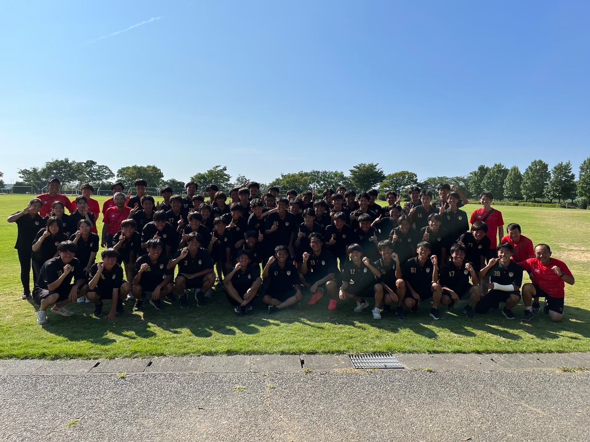

現在の部員数
2023 年度 計65 名(うち、マネージャー5 名)
- 3 年生 : 16 名+マネージャー1 名
2 年生 : 24 名+マネージャー1 名
1 年生 : 20 名+マネージャー3 名
現在の部員たちの中学出身チーム
クラブチーム出身
Joga Bonito 太田 FC 高槻 FC FC eje(現.VUELO)
RESC A.C.Re:Salto 千里丘 FC 摂津パルティーダ 高槻 Sieg KONKO.FC
中体連出身
高槻市立第一中学校 茨木市立南中学校 摂津市立第三中学校 第二中学校 西中学校 枚方市立楠葉西中学校 第六中学校 東中学校 桜丘中学校 第八中学校 三島中学校 大阪市立三国中学校 第九中学校 太田中学校 吹田市立片山中学校 芝谷中学校 養精中学校 島本町立第一中学校 阿武山中学校 東雲中学校如是中学校 天王中学校 城南中学校 冠中学校
スタッフについて
本校サッカー部はスタッフ計 9 名で活動を行っております。
本校 OB だけでなく GK コーチやトレーナーもおり、多方面から選手のサポート・指導を行います。
・本校非常勤講師 1 人(理科)
・外部コーチ 3 人(GK コーチ 1 人、本校 OB2 人)
・トレーナー1 人